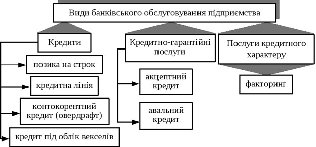

Банківський кредит - це основна форма кредиту, за якої банк надає клієнтові у тимчасове використання частину власного, або залученого капіталу на умовах повернення зі сплатою банківського процента.
Банківський кредит класифікують за різними ознаками. За такого кредитування підприємство виступає тільки в ролі позичальника. Даний кредит має широку цільову спрямованість і залучається в найрізноманітніших видах. В останні роки в кредитуванні підприємств беруть участь не тільки вітчизняні, але й закордонні банки, особливо в кредитуванні спільних підприємств. Під банківським кредитом розуміються кошти, надані банком у борг клієнту для цільового використання на встановлений термін під визначений відсоток.
Банківський кредит класифікують за такими ознаками:
1. Цільове спрямування - залежно від цільового спрямування кредит може надаватися: на фінансування оборотного капіталу; фінансування основного капіталу; викуп приватизованого підприємства. Чинне українське законодавство забороняє надавати підприємствам кредити на покриття збитків від господарської діяльності, на формування і збільшення статутних фондів банків та інших господарських товариств.
Відповідно до банківської практики не можуть отримати кредити підприємства: проти яких порушено справу про банкрутство (крім кредитування заходів фінансової санації); під укладені контракти, які не передбачають захисту позичальника від можливих втрат, пов'язаних із затримками в поставках товарів; за наявності простроченої заборгованості за раніше наданими кредитами.
2. Термін кредиту - залежно від терміну розрізняють: короткостроковий, середньостроковий і довгостроковий кредити.
3. Вид відсоткової ставки - залежно від відсоткової ставки підприємства можуть одержувати кредити з плаваючою і фіксованою відсотковою ставкою. Позички з фіксованою відсотковою ставкою підприємствам надаються переважно за умов стабільної економіки. За економічної нестабільності підприємствам, звичайно, надаються позички з плаваючою відсотковою ставкою. Ставки за такими позичками залежать від вартості залучених банками ресурсів, офіційної облікової ставки Національного банку України. Підприємства переважно намагаються отримати в банках позички з фіксованою відсотковою ставкою.
4. Валюта кредиту - підприємства можуть одержувати в банках кредити як у національній, так і в іноземній валюті. Для одержання кредитів у іноземній валюті від іноземних кредиторів підприємство мусить зареєструвати кредит у НБУ. Кредитування в іноземній валюті має особливість, яка полягає в тому, що грошові надходження в національній валюті, яких нині достатньо для купівлі іноземної валюти, не можуть уважатися надійним джерелом погашення кредиту, бо можливі зміни валютного курсу.
Кредит в іноземній валюті може бути використаний підприємством на фінансування капітальних вкладень, придбання обладнання, сировини, матеріалів. Зокрема, підприємство може передбачати часткове використання виданого кредиту на такі цілі: оплата комісійних за виконання банком платежів або інших операцій з валютою, які здійснюються відповідно до кредитного договору підприємства з іноземною фірмою; оплата витрат на відрядження працівників підприємства за кордон у межах установлених контрактом; сплата мита, страхових та митних внесків, які встановлені країною-експортером і віднесені за умовами контракту на імпортера; оплата транспортних витрат у межах чинних тарифів або документально підтверджених витрат на транспортування експортної продукції; оплата імпортних контрактів; оплата витрат на внутрішньому ринку України способом конвертації в національну валюту.
5. Види обслуговування.
Банківський кредит надається підприємствам на сучасному етапі в таких основних видах:
1. Бланковий (незабезпечений кредит) під здійснення окремих господарських операцій, як правило, дається комерційним банком, що здійснює розрахунково-касове обслуговування підприємства. Хоча формально він носить незабезпечений характер, але фактично забезпечується розміром дебіторської заборгованості підприємства і його засобів на розрахунковому й інших рахунках у цьому ж банку. Крім того, даний вид кредиту є звичайно "тим, що сам ліквідовується", бо здійснена при його посередництві господарська операція генерує при її завершенні грошовий потік, достатній для його повного погашення. Даний вид кредиту дається, як правило, тільки на короткостроковий період.
2. Контокорентний кредит (овердрафт) (від італ. conto corrent - поточний рахунок) - передбачає ведення банком поточного рахунка клієнта з оплатою розрахункових документів, що надійшли, і зарахуванням виторгу. Якщо коштів клієнта виявляється недостатньо для погашення зобов'язань, банк кредитує його в межах встановленої в кредитному договорі суми, тобто контокорент може мати і дебетове, і кредитове сальдо.
Контокорентний кредит (овердрафт) дається банком звичайно під забезпечення, але ця вимога не є обов'язковою. При наданні даного кредиту банк відкриває підприємству контокорентний рахунок, на якому враховуються як кредитні, так і розрахункові його операції. Контокорентний рахунок використовується в якості джерела кредиту в обсязі, що не перевищує встановлене в кредитному договорі максимальне негативне сальдо (контокорентний ліміт). За негативним залишком контокорентного рахунка підприємство сплачує банку встановлений кредитний відсоток; при цьому договором може бути визначено, що за позитивним залишком цього рахунка банк нараховує підприємству депозитний відсоток. Сальдування надходжень і виплат за контокорентним рахунком підприємства відбувається через установлені договором проміжки часу з розрахунками кредитних платежів.
Існують спеціальні овердрафтні рахунки, коли банк кредитує клієнта понад установлені кредитним договором суми. Розрахунки по контокоренту проводяться з установленої договором періодичністю шляхом сальдо платежів і надходжень та визначення реальної суми наданого кредиту.
Овердрафт - це допущення дебетового залишку на рахунку клієнта. У багатьох країнах клієнтські овердрафти заборонені законодавчо (однак вони активно використовуються у Великобританії). Овердрафт розглядається як своєрідна позичка клієнтові, що повинна бути погашена в короткий термін і з процентною ставкою, що перевищує середньоринкову.
3. Обліковий (вексельний) кредит надається банком пред'явникові векселів, обліковуючи їх до настання терміну платежу. Векселедержатель одержує від банку зазначену у векселі суму за винятком облікового відсотка, комісійних платежів і інших накладних витрат. Закриття кредиту здійснюється на підставі повідомлення банку про оплату векселя.
4. Відкриття кредитної лінії - це згода банку надати кредит у майбутньому в розмірах, які не перевищують заздалегідь обумовленої суми за певний період часу без проведення додаткових спеціальних переговорів. Кредитна лінія відкривається, як заведено, на рік, але її можна відкрити й на коротший термін. Відкрита кредитна лінія дає змогу оплатити за рахунок кредиту будь- які розрахункові документи, передбачені кредитною угодою, що укладається між підприємством та банком. Протягом строку дії кредитної лінії підприємство може будь-коли одержати позичку без додаткових переговорів з банком та інших формальностей. Проте за банком зберігається право відмовити підприємству у видачі чергової частини позички в межах затвердженого ліміту, якщо банк виявить погіршання фінансового стану позичальника, невиконання умов кредитної угоди. Через це кредитну лінію відкривають підприємствам зі стійким фінансовим становищем та доброю репутацією.
5. Револьверний (автоматично поновлювальний) кредит (або акредитив), кредитна лінія. Юридично формалізований контракт про надання кредиту на якусь максимальну суму протягом визначеного періоду.
Якщо фінансове становище фірми не змінюється, то раніше надана їй кредитна лінія пролонгується на фіксований термін (звичайно на рік). При перегляді кредиту уточнюються наступні умови кредиту: розмір кредитної лінії, процентна ставка по кредиту й інші умови. Розмір процентної ставки - особливо важлива категорія для банку, тому що зміна процентних ставок у часі різко зростає.
На відміну від кредитної лінії являє собою юридичне зобов'язання давати кредит у межах встановленого обсягу протягом установленого періоду. Поки зобов'язання зберігає силу, банк повинен давати кредит, коли б позичальник не побажав, за умови, що загальна його сума не перевищить визначеного максимального розміру.
6. Онкольний кредит (від англ. on call - за вимогою) є різновидом контокорента і видається, як правило, під заставу товарно-матеріальних цінностей або цінних паперів. У межах забезпеченого кредиту банк оплачує всі рахунки клієнта, одержуючи право погашення кредиту на першу свою вимогу за рахунок коштів, що надійшли на рахунок клієнта, а при їхній недостатності - шляхом реалізації застави. Процентна ставка по цьому кредиту нижча, ніж по термінових позичках.
7. Ломбардний кредит - здійснюється у формі банківського кредиту під заставу депонованих у банку цінних паперів. У заставу звичайно приймаються цінні папери, що котируються на біржі.
Сума кредиту складає від 50 до 90% їхньої курсової вартості. Термін кредиту звичайно не перевищує трьох місяців.
Контракт на одержання ломбардного кредиту може передбачати різні умови виплати боргу. У випадку, якщо позичальник не погасить кредит вчасно, він зобов'язаний розрахуватися з кредитором по збільшеній (штрафній) процентній ставці за весь період прострочення платежу. Якщо кредит усе-таки не буде погашений, право власності переходить до кредитора, що реалізує майно й утримує з продажу суму боргу разом з нарахованими відсотками.
8. Іпотечний кредит - може бути отриманий від банків, що спеціалізуються на видачі довгострокових позик під заставу основних засобів або майнового комплексу підприємств у цілому ("іпотечних банків"). Підприємство, що передає в заставу своє майно, зобов'язане застрахувати його в повному обсязі на користь банку. При цьому закладене в банку майно продовжує використовуватися підприємством. В умовах різкого скорочення видачі підприємствам незабезпечених банківських позик іпотечний кредит стає основною формою довгострокового банківського кредитування.
9. Роллеверний кредит є одним із видів довгострокового кредиту з процентною ставкою, що періодично переглядається у зв'язку зі зміною кон'юнктури фінансового ринку. У європейській практиці перегляд процентної ставки здійснюється один раз у квартал або півріччя (в умовах високої інфляції і частої зміни дисконтної ставки центрального банку періодичність перегляду процентних ставок за кредит може бути більш частою).
10. Консорціумний (консорціальний) кредит - кредитна політика банку, система встановлених нормативів кредитування або високий рівень ризику іноді не дозволяють йому повною мірою задовольнити високу потребу підприємства-клієнта в кредиті. У цьому випадку банк, що обслуговує підприємство, може залучати до кредитування свого клієнта, інші банки, тобто створюється союз банків для здійснення таких кредитних операцій, який називається консорціум. Після укладання з підприємством-клієнтом кредитного договору банк акумулює засоби інших банків і передає їх позичальнику, розподіляючи суму відсотків при обслуговуванні боргу. За організацію консорціум його кредиту ведучий (обслуговуючий клієнта) банк одержує визначену комісійну винагороду.
11. Акцептний кредит використовується в основному в зовнішній торгівлі і надається постачальником імпортерові шляхом акцепту банком виставлених на нього експортером трат.
12. Сезонний кредит із щомісячною амортизацією боргу.